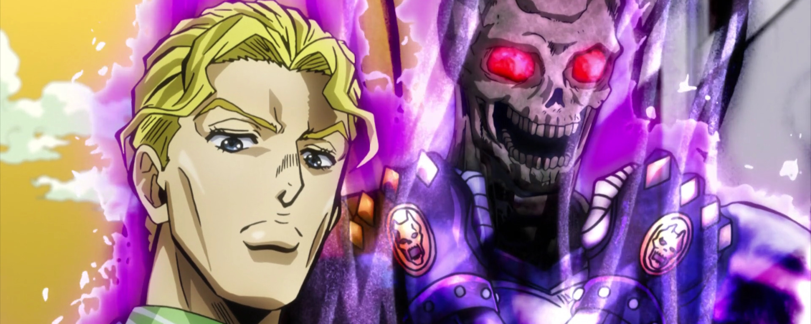

Preciso beber H20 em estado líquido e fugir de emissões de CO2
Além é claro, de lhe informar que E= mc2.
"Chuva no chão e peia no espinhaço de cabra ruim todo tempo é bom."
- Minha bisavó.
Se achou o ditado ruim, problema seu >:)
Details and summary
Cuidado ao clicar aqui.

Killer Queen já tocou nesse sumário
O meu nome é Yoshikage Kira, tenho 33 anos, moro na zona noroeste da cidade de Morioh, eu não sou casado, sou empresário da loja de departamentos Kameyu e chega em casa todo dia por volta das oito horas, eu não sou fumante e bebo apenas socialmente, eu me deito todo dia às onze horas e faço questão de dormir por 8 horas não importa oque aconteça, desde que eu possa tomar um copo de leite quente e me exercitar fazendo alongamentos por pelo menos 20 minutos antes de ir pra cama, eu costumo ter um sono interrúpto e acordo pela manhã sem o mínimo cansaço ou estresse, como se fosse um bebezinho despreocupado, no meu último check-up de saúde não encontraram nenhum problema, eu estou dizendo isso para mostrar que sou uma pessoa tranquila que evita se envolver em encrencas ou criar inimizades e tenho certeza de que vivendo assim eu consigo ser feliz, porém se eu tiver que enfrentar alguém eu sei que ninguém me dertotaria, esta é minha habilidade Killer Queen, a ver dizer esse é o nome que eu mesmo decidi dar à essa entidade, resumidamente você é um incômodo capaz de me tirar o sono a noite, portanto é meu inimigo, agora eu vou te matar antes que você consiga contar algo para alguém, eu preciso garantir meu sono tranquilo